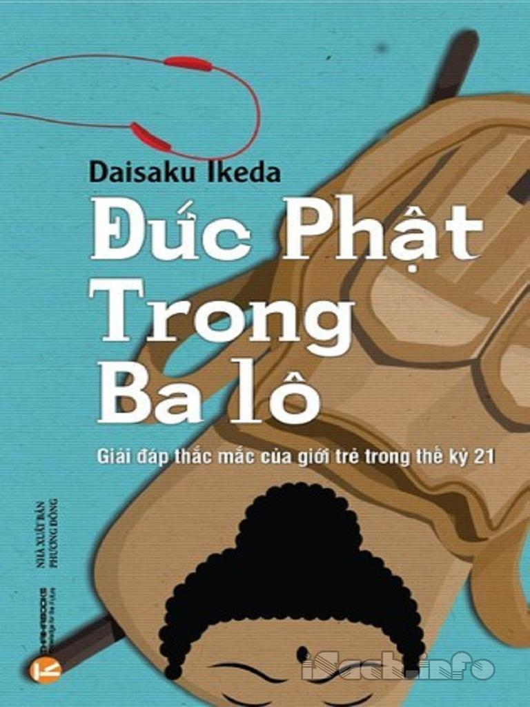

« Back
Đức Phật Trong Ba Lô
By Daisaku Ikeda

Lời Tựa.
Mở Đầu.
Gia Đình:Cha Mẹ Hay La Rầy.
Gia Đình:Thể Hiện Cá Tính.
Gia Đình:Quá Ít Tiền.
Gia Đình:Hòa Hợp Với Cha Mẹ.
Gia Đình:Tiếp Thu Lời Khuyên.
Gia Đình:Cấm Đoán Quá Nhiều.
Bạn Bè:Tình Bạn Thật Sự.
Bạn Bè:Chọn Bạn Tốt.
Bạn Bè:Bạn Tốt:Bạn Xấu.
Bạn Bè:Đánh Mất Bạn Bè.
Bạn Bè:Đối Xử Với Việc Bị Tẩy Chay.
Bạn Bè:Làm Gì Khi Bị Từ Chối.
Bạn Bè:Áp Lực Từ Bạn Bè.
Bạn Bè:Giữ Bạn.
Bạn Bè:Những Người Mà Bạn Không Ưa.
Bạn Bè:Đối Phó Với Sự Đố Kỵ.
Bạn Bè:Là Một Người Đơn Độc.
Bạn Bè:Khuyên Nhủ Bạn Bè.
Tình Yêu:Tình Yêu Đích Thực.
Tình Yêu:Thành Thật Với Chính Mình.
Tình Yêu:Nghiện Yêu.
Tình Yêu:Giữ Mình.
Tình Yêu:Bảo Vệ Bản Thân.
Tình Yêu:Tình Dục.
Tình Yêu:Bà Bầu Tuổi Teen.
Tình Yêu:Thất Tình.
Học Tập:Mục Đích Của Học Tập.
Học Tập:Đòi Hỏi Về Thời Gian.
Học Tập:Bỏ Học.
Học Tập:Tầm Quan Trọng Của Điểm Số.
Học Tập:Thi Đỗ Vào Một Trường Đại Học Tốt.
Học Tập:Sợ Thất Bại.
Học Tập:Đi Làm So Với Học Đại Học.
Học Tập:Không Có Tiền Học Đại Học.
Học Tập:Trường Dạy Nghề.
Học Tập:Tầm Quan Trọng Của Việc Đọc Sách.
Học Tập:Học Cách Thích Đọc Sách.
Học Tập:Tầm Quan Trọng Của Lịch Sử.
Công Việc:Chọn Nghề.
Công Việc:Tìm Ra Sứ Mệnh Của Mình.
Công Việc:Tài Năng.
Công Việc:Công Việc Phù Hợp.
Công Việc:Thay Đổi Nghề Nghiệp.
Công Việc:Không Làm Việc.
Công Việc:Kiếm Tiền.
Công Việc:Làm Việc Vì Một Lý Tưởng.
Ước Mơ Và Mục Tiêu:Ước Mơ Lớn.
Ước Mơ Và Mục Tiêu:Tập Trung.
Ước Mơ Và Mục Tiêu:Đủ Thông Minh.
Ước Mơ Và Mục Tiêu:Bước Theo Con Tim.
Ước Mơ Và Mục Tiêu:Không Bao Giờ Bỏ Cuộc.
Ước Mơ Và Mục Tiêu:Củng Cố Lòng Quyết Tâm.
Ước Mơ Và Mục Tiêu:Tầm Quan Trọng Của Lòng Dũng Cảm.
Ước Mơ Và Mục Tiêu:Lòng Dũng Cảm Và Lòng Thương.
Sự Tự Tin:Nuôi Dưỡng Hi Vọng.
Sự Tự Tin:Tiềm Năng Thực Sự.
Sự Tự Tin:Đối Diện Với Các Vấn Đề.
Sự Tự Tin:Bộc Lộ Hết Mình.
Sự Tự Tin:Tự Tin Và Có Trau Dồi.
Sự Tự Tin:Chuyển Hóa Nghiệp.
Sự Tự Tin:Lỗi Lầm.
Sự Tự Tin:Đối Phó Với Sự Chỉ Trích.
Sự Tự Tin:Nhút Nhát.
Sự Tự Tin:Ngượng Ngùng.
Sự Tự Tin:Nhìn Người Khác Một Cách Tích Cực.
Lòng Từ Bi:Quan Tâm Đến Người Khác.
Lòng Từ Bi:Lòng Tốt Thật Sự.
Lòng Từ Bi:Can Đảm Giúp Đỡ.
Lòng Từ Bi:Thể Hiện Sự Quan Tâm.
Lòng Từ Bi:Đối Diện Với Sự Nhẫn Tâm.
Lòng Từ Bi:Đối Diện Với Bạo Lực.
Lòng Từ Bi:Bạo Lực Với Phụ Nữ.
Môi Trường:Quan Tâm Đến Môi Trường.
Môi Trường:Hành Động Bảo Vệ Môi Trường.